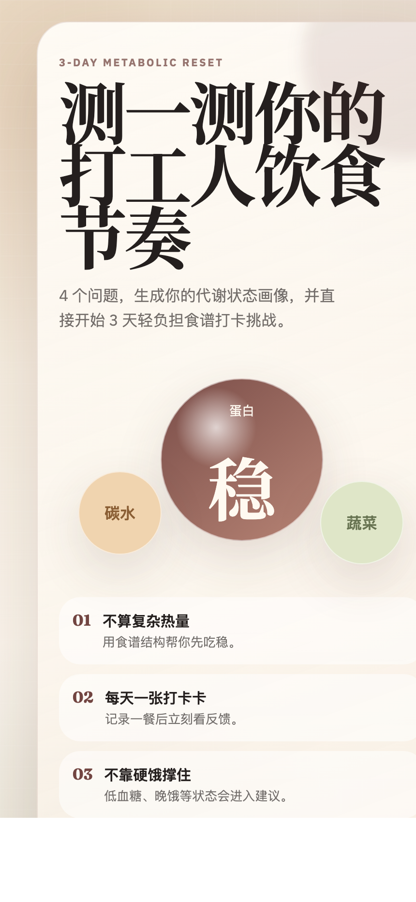
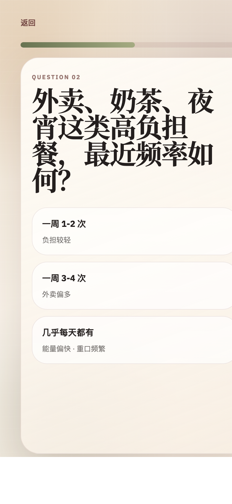
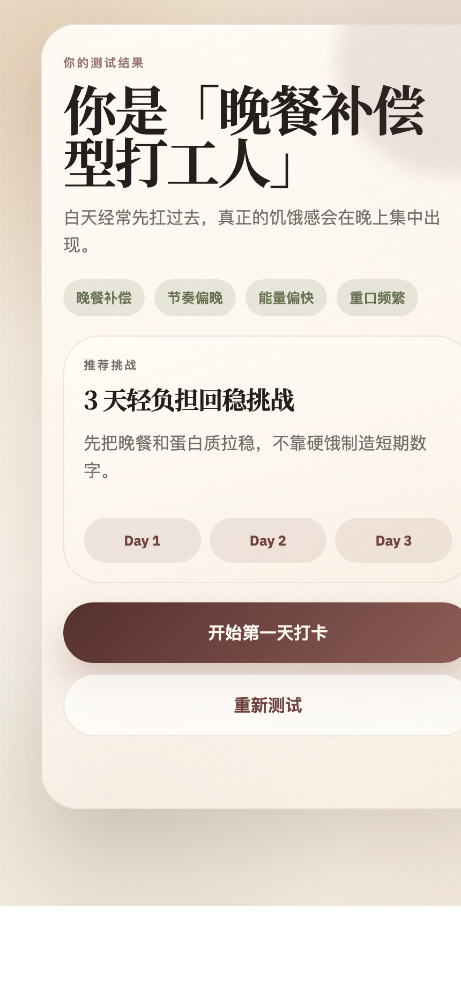
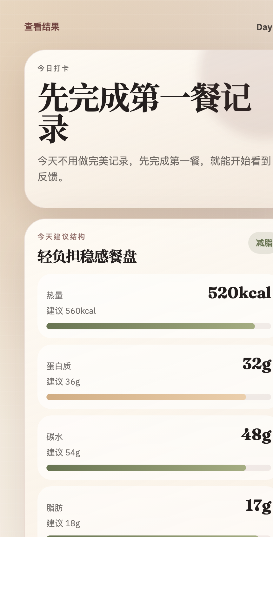

Health Communication Campaign Report
面向一线城市 25-35 岁互联网从业者的体重管理活动。以久坐、外卖、熬夜造成的隐性肥胖与代谢负担为切入点，通过 H5 测试与 3 天食谱打卡挑战，推动用户从“意识到问题”走向“立即行动”。
01 Activity Overview
「久坐白领自救计划」不是以“快速减肥”为卖点，而是把体重管理转化为低门槛、可执行、可反馈的生活方式挑战。活动承认互联网从业者时间紧、压力大、外卖依赖高的现实，用“先测状态，再开始 3 天打卡”的方式降低行动阻力。
很多白领只关注体重数字，忽视久坐、外卖、熬夜带来的隐性肥胖和代谢负担。
推动用户完成阶段跃迁：从未意识到问题，到愿意参加 3 天轻负担食谱打卡。
用 4 题测试制造参与感，再用饮食人格和推荐挑战承接行动动机。
02 TTM Strategy
目标用户不是同质化人群。他们处在行为改变的不同阶段，因此传播内容需要从“唤醒意识、降低阻力、促进行动”三个层次逐步推进。
通过隐性肥胖、久坐、外卖高糖陷阱等内容进行意识唤醒，但避免使用恐吓式诊断。
降低“没时间、没精力”的感知障碍，强调 4 题测试和 3 天挑战的微成本。
用 Day 1 打卡页、餐后反馈和食谱结构帮助用户马上完成第一步。
03 H5 Funnel Design
H5 已从工具型 App 原型改为线性活动漏斗：活动首页 → 4 题小测试 → 饮食人格结果页 → Day 1 打卡页。核心目标是让用户完成“立即参加打卡活动”。
突出“4 题测状态 + 3 天挑战”，减少注册感。
围绕吃饭节奏、高负担餐、身体感受、目标四个问题。
输出饮食人格、代谢状态信号和推荐挑战。
直接进入第一天，选择一餐并获得即时反馈。




04 Communication Materials
两条短视频分别服务不同的 TTM 阶段：第一条负责意识唤醒，第二条负责行动转化。建议均采用 9:16 竖屏短视频，以“小红书/视频号/内网活动入口”为主要投放场景。
Script 01 · 意识唤醒
| 时间 | 画面 | 字幕 / 旁白 | 传播目的 |
|---|---|---|---|
| 0-3s | 工位前的白领，桌上有外卖和奶茶，镜头推近腰腹。 | “体重没变，就真的没胖吗？” | 用反常识钩子抓住注意力。 |
| 4-12s | 体重秤数字正常，同时叠加久坐、熬夜、外卖画面。 | “很多打工人不是胖在体重上，而是胖在久坐和外卖堆出来的代谢负担里。” | 引入隐性肥胖概念，但不做诊断。 |
| 13-25s | 动画链路：白天凑合 → 晚餐补偿 → 饭后困 → 第二天继续循环。 | “白天没空吃，晚上补回来，看起来只是忙，其实身体已经在提醒你。” | 让受众重新评估工作环境对健康的影响。 |
| 26-40s | 展示 H5 测试题快速切换。 | “先别急着减肥，先测测你是哪种打工人饮食节奏。” | 降低焦虑，把意识唤醒导向低门槛测试。 |
| 41-55s | 结果页出现“晚餐补偿型打工人”，随后出现挑战页。 | “知道问题在哪，下一餐才知道怎么吃。” | 引导点击 H5，进入测试。 |
Script 02 · 行动转化
| 时间 | 画面 | 字幕 / 旁白 | 传播目的 |
|---|---|---|---|
| 0-5s | 晚上 10 点办公室，用户打开健身 App 又关掉。 | “你不是不想管体重，是每天真的太忙了。” | 承认现实阻碍，减少被说教感。 |
| 6-15s | 收藏夹里全是减脂餐，桌上仍是外卖。 | “计划很多，坚持很难。一加班，就回到外卖。” | 击中意图期用户的行动障碍。 |
| 16-28s | 打开 H5，快速完成 4 题测试。 | “这次不要求完美自律，先用 4 题找到你的饮食节奏。” | 降低行动成本，提高参与感。 |
| 29-42s | 进入 Day 1 打卡页，选择“牛肉饭 + 奶茶”，出现反馈。 | “记录完一餐，就知道这餐怎么样，下一餐怎么补。” | 展示即时反馈和产品价值。 |
| 43-58s | 按钮变为“已完成第一餐打卡”，画面转向轻松表情。 | “不是靠饿撑住，而是先把每一餐慢慢吃稳。” | 推动用户点击“立即参加打卡活动”。 |
05 Material Matrix
用于触达无意图期和意图期用户，以“体重没变不等于没胖”“别靠意志力减肥”为内容钩子。
承接视频流量，完成 4 题测试、结果生成和 Day 1 打卡，是本次活动的主要转化载体。
可将 H5 二维码嵌入“外卖/便利店救命指南”中，在用户点餐前进行干预。
用 #那些逃离过劳肥的互联网狠人# 鼓励用户分享打卡经验和工作日饮食策略。
06 Evaluation Plan
评估不只看曝光量，更要判断用户是否完成 TTM 阶段跃迁。
短视频完播率、H5 点击率、测试完成率、结果页到 Day 1 打卡转化率、第一餐打卡完成率。
活动前后问卷比较：无意图期比例是否下降，准备期/行动期比例是否上升。
记录用户选择的饮食人格、目标类型、第一餐选择和即时反馈完成情况。
访谈半途放弃用户，分析加班、外卖环境、低血糖感等复发因素。
07 Risk Boundary
本活动应避免使用“诊断”“治愈”“保证减重”等医疗化或绝对化表达。所有内容应使用“可能”“值得关注”“更适合”“帮助你吃稳”等生活方式建议语言，强调该活动是健康管理与行为改变支持工具，而不是医疗判断。